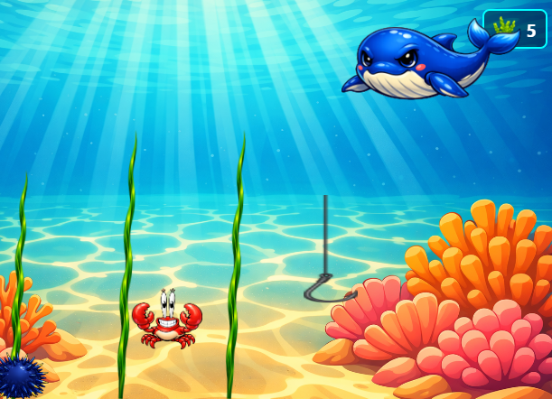
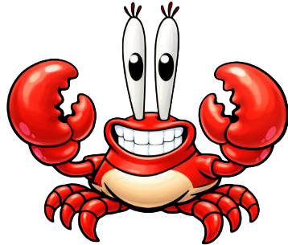
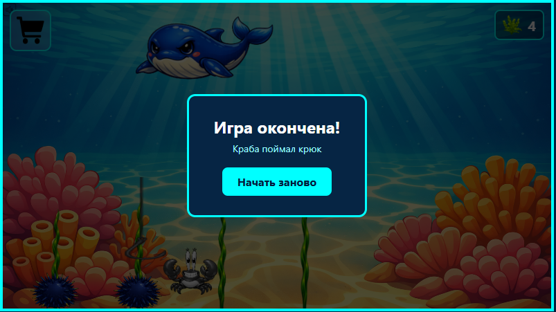
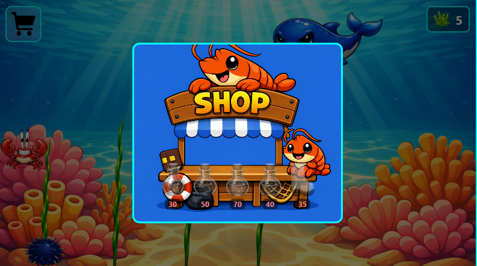

Стрижёте водоросли
Водоросли постоянно отрастают заново — водите крабом рядом, чтобы подрезать их до того, как они перекроют весь огород.
Браузерная аркада • дно океана
Вы — краб-садовник. Ваш огород растёт прямо на морском дне, а мешают вам морские ежи, рыболовный крюк и проплывающий кит. Чем дольше вы держитесь — тем быстрее становится погоня.

Сюжет
Где-то на илистом дне, среди зарослей водорослей, живёт краб с обострённым чувством порядка. Каждый день заросли снова тянутся вверх — и каждый день он выходит их стричь, собирая срезанные листики в свою кладовую.
Но огород редко бывает спокойным местом: колючие морские ежи перекрывают дорожки, откуда ни возьмись падает рыболовный крюк, а вдалеке проходит кит, чья волна может смести весь урожай за секунду.

Механики
Водоросли постоянно отрастают заново — водите крабом рядом, чтобы подрезать их до того, как они перекроют весь огород.
Каждый срезанный стебель оставляет листики — валюту игры. Копите их на ходу, не отвлекаясь от угроз.
Морские ежи стоят на месте и жалят при касании, крюк падает сверху по таймеру, а кит время от времени проходит через всю сцену.
Опасности дна
Неподвижная колючая ловушка. Не смертельна сама по себе, но крадёт время и место на грядке.
Опускается сверху с нарастающей скоростью. Поймает краба — игра окончена, но перезапуск в одну кнопку.
Появляется на фоне и постепенно ускоряется вместе с крюком, поднимая напряжение всей партии.
Скорость крюка и кита растёт со временем — расслабляться некогда.
Магазин
Заработанные листики превращаются в постоянные бусты, которые меняют стиль прохождения.
Краб двигается быстрее — легче убегать от крюка и китовой волны.
Каждый срезанный стебель приносит вдвое больше листиков.
Ближайшие водоросли подстригаются сами, пока вы уворачиваетесь от угроз.
Гасит одно столкновение с ежом или волной кита без урона.
Даёт один бесплатный выход из захвата крюком — забег продолжается.
Галерея






Играть
Игра не отображается? Откройте её в отдельной вкладке.
Одна попытка длится пару минут, а перезапуск после поимки крюком — одна кнопка.
К игре ↑